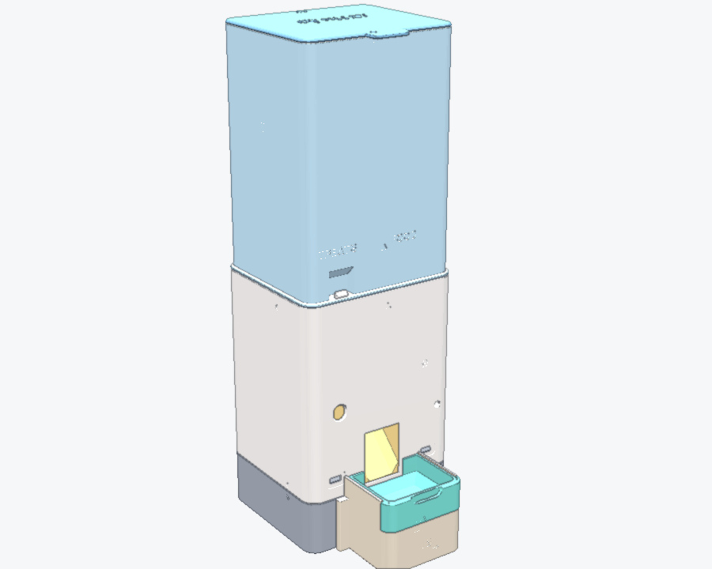

01 / תוכנה וחיבורים
נותנים למתקן
חיים.
התקנת התוכנה, חיבור לרשת ובדיקות ראשונות.
צעד אחר צעד, מהכבל ועד החטיף הראשון.

01
ESP32 / היחידה הראשית
מתקינים את התוכנה
ההתקנה מתבצעת ב-Chrome או Edge במחשב (Windows / Mac). בטלפון אפשר לעיין במדריך ובדגמי התלת־מימד.
לפני שמחברים לחשמל
המערכת עדיין לא נבדקה על חומרה אמיתית. ההתקנה והיחידות הנוספות הן ניסיוניות, ויש להרכיב ולבדוק לפי הוראות הבטיחות במדריך.
- מחברים את לוח ה-ESP32 בכבל USB-C (כבל שמעביר נתונים, לא רק טעינה) למחשב.
אם המתקן כבר מורכב: לנתק קודם את מטען ה-USB-C של המתקן. - פותחים את הדף הזה בכרום במחשב.
- לוחצים התקן, בוחרים את היציאה (משהו כמו USB-SERIAL CH340) ולוחצים Connect / התחבר.
בחלון שנפתח:
- בוחרים Install. בהתקנה ראשונה מסמנים Erase.
- לוחצים Next ומחכים בערך 2 דקות, עד Installation complete.
הדפדפן הזה לא יכול להתקין. צריך כרום או Edge במחשב (לא בטלפון, לא ספארי, לא פיירפוקס).
צריך לפתוח את הדף בכתובת https.
לא מופיעה יציאה ברשימה?
- מתקינים את הדרייבר של CH340 ומפעילים את המחשב מחדש:
Windows: CH341SER.EXE · Mac: CH34XSER_MAC - מנסים כבל USB אחר (הרבה כבלים הם רק לטעינה) או שקע אחר במחשב.
- אם ההתקנה נתקעת ב-"Connecting…": מחזיקים את הכפתור BOOT על הלוח, לוחצים התקן, ומשחררים כשההתקנה מתחילה.
אחרי ההתקנה
- בטלפון מתחברים לרשת DogTreat-Setup ובוחרים את הוויי-פיי של הבית.
- פותחים http://dogtreat.local. אם לא נפתח: כאן בדף, התקן → Logs & Console, ומחפשים שורה [wifi] IP: … – זו הכתובת.
- באפליקציה, למעלה: "בדיקת חיבורים".
- חטיף מהיר: פעם אחת, בדף "ארוחות" → "חטיף מהיר", לוחצים "סובב למצב מוכן". נפל חטיף לבד? "נפל לפני הקליק", ושוב.
- עדכון מגרסה קודמת: לא מסמנים "Erase". הכל נשמר: הוויי-פיי, ההגדרות, הנביחות שהקלטת והסימונים "זה לא היה נביחה".
- עדכון מ-2.9.5: הוויי-פיי וההגדרות נשמרים, אבל גרפי ההתקדמות מתחילים מאפס.
- התקנה מחדש עם "Erase" מוחקת גם את הוויי-פיי וההגדרות.
03 לוחות נוספים
מצלמה ESP32-CAM: שמים אותה על לוח מתאם ה-USB (MB), מחברים את ה-MB ב-USB למחשב, ולוחצים:
אחרי ההתקנה היא פותחת רשת DogCam-Setup, ובהגדרות של המתקן כותבים כתובת מצלמה dogcam.local.
יחידה חיצונית ESP32-C3: קודם לנתק את הסוללה. מחברים את ה-C3 ב-USB-C למחשב. אם לא מופיעה יציאה: מחזיקים BOOT, מחברים, משחררים.
קוד המקור: DogFeedTreat296-source.zip
שם קובץ המקור נשאר כפי שהיה בארכיון (296). חבילת ההתקנה מזוהה במניפסט כתוכנה 2.9.9. קבצי התוכנה לא שונו בעיצוב מחדש.